~19 Getting Back in the Door~
5/18/2026
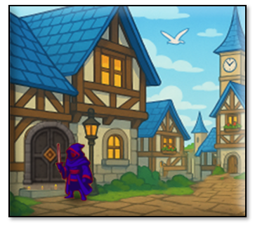
The Problem
When we are playing the game, and we have been killed in the fight, our hero is kicked out of the dungeon, and is thrown somewhere else, such as into the town. Except that he hasn’t shown up in town. We are viewing the town, but where did our player go?
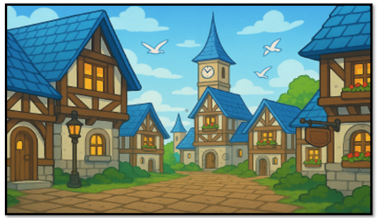Of course, we could restart the game everytime, and run the hero through its paces to get to another area, but this takes time. It would be much faster if we could continue playing the game, and do our testing. This way we could just have the hero run back through a door, and BAM, we are back where we need to be.
One of the problems is that when he is in the fight room, and the hero dies, his object is destroyed. Once he is destroyed, he isn’t being spawned anywhere. So, therefore, we are getting this image of an empty town with no hero in it.
For getting back into the fight room itself, we will not be using a door, we will be using a keypress. This is because, colliding with a monster, and not the door, in the dungeon will thtow you into the fight room. Of couse we could just throw the blue slime into town, but for testing the key press will work fine, and I will describe how to do that at the end of this tutorial.
Besides that little re-spawning issue that we are having with our hero, we also are experiencing a little problem with the door itself. The door works on a collision event. So, we can throw a door into the town, but without the hero showing up to collide with it, we are never getting back into the dungeon.
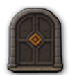We also have a scaling issue, and this problem is causing havoc with both the hero object, and the door. Unless we write some code to change the size of these elements, they are going to show up in town, really, really small. And that is certainly not what we will be wanting.
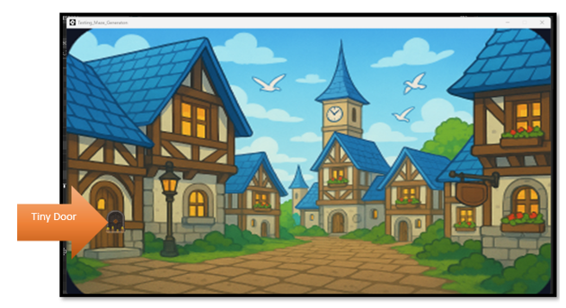
The Solution
You will need a new controller.
obj_enviroment_controller - Spawns and scales the hero when entering any new scenic enviroment
The controller is required because it CREATES the hero if it doesn't exist. And in our case, it is not being created, because we destroyed his instance at the end of the fight when he died. (sort of)
The Enviroment Controller
We could create a different controller for each door we have, but it is really unnecessary because it just uses the same code. So, we can create a generic Controller for Everything.
In GameMaker, create a new object: obj_enviroment_controller
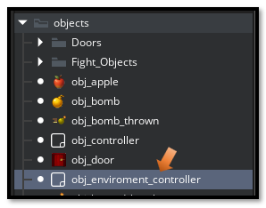
Add a Create Event
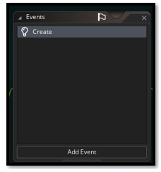Go Here to find the code for the code for the create event: 1 obj_enviroment_controller
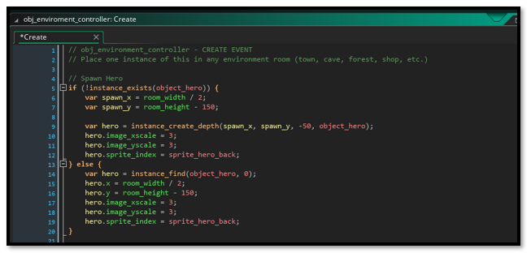Place your Controller in the Room
Place ONE obj_enviroment_controller in your rm_town room
Open your Rooms folder and then place your town controller

Now move your controller object into the room.
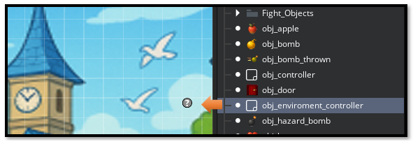WHAT THE CONTROLLER DOES
Spawns object_hero if it doesn't exist
Scales hero to 3x size
Positions hero at bottom center of the room
Scales ALL doors to 3x to match the scene
Changing the Scale of the Hero
The Scale of the Hero is inside of the obj_hero START EVENT. You can change this to be 3x if the hero appears to be too small inside of the town.
Under Objects, you want to open the obj_hero
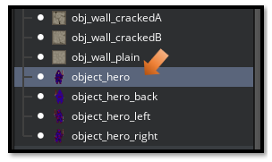In the Room Start code for the Hero. You already have this code, so all you need to do is find the section of the code, where it says, image_xscale and image_yscale, and change both of these setting to match with a visual good size of these elements inside the room. For me, the best size was 3, but you may find that you would like it to be a different size for your own project.
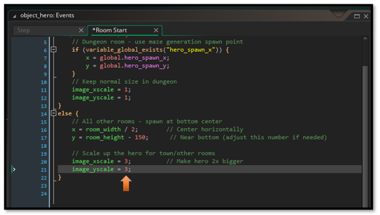
TROUBLESHOOTING
Hero doesn't appear in town:
Make sure obj_town_controller is placed in the room
Hero appears but is tiny:
Check that the controller is running and scaling is applied
Door is still small:
Make sure the door object name matches what's in the controller
Check for typos like obj_door_Boss vs obj_door_boss
Hero spawns in wrong position:
Adjust the spawn coordinates in the controller. To move the guy up, increase the number in Y position here here. To move the hero down in the room decrease the number here.
object_hero - ROOM START
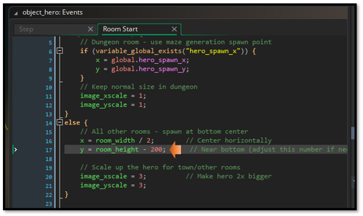You can use decimals on the scaling to make an object fit better. I added .3 to the end of scaling the door, and it fits better.
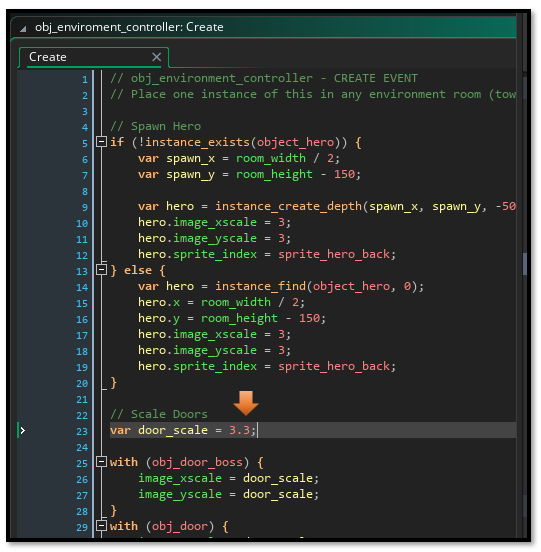When you place the door in the room it may not fit because we will be dynamically scaling it in the code, just move it around until it looks good in the game
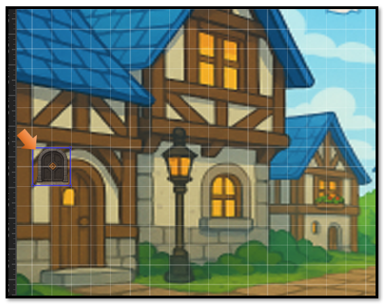
The tiny door scales well in the game. It looks fine. You can walk into it and you can go to the boss room.
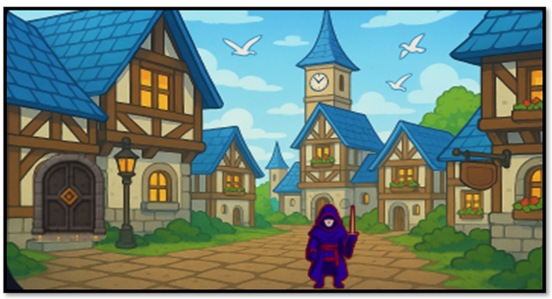
To Test the Fight Room
You will notice that you do not have a fight room door. That is because the only way you get into the fight room is if you collide with the enemy. So, you do not need one.
However, you might want to easily get back into the room to test. The best way to handle this is to add a debug, with a key press, near the bottom of the step event for the hero.
Open up your object hero.
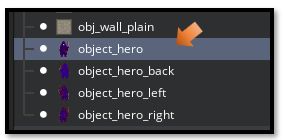
// Debug: Press F1 to enter fight room
if (keyboard_check_pressed(vk_f1)) {
room_goto(rm_fight); // or whatever your fight room is named
}
I placed this code right before the hero is checking for an exit.
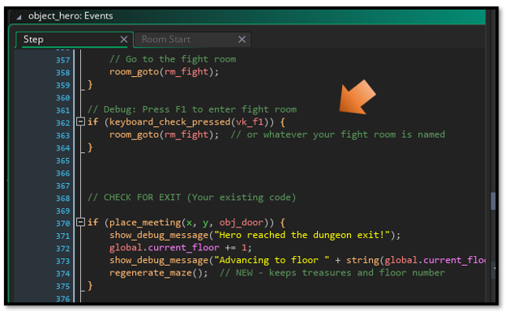
This should be enough to get you started with being able to test your project, without having to shut down the Game. So, I guess I will end this tutorial for the week right here.